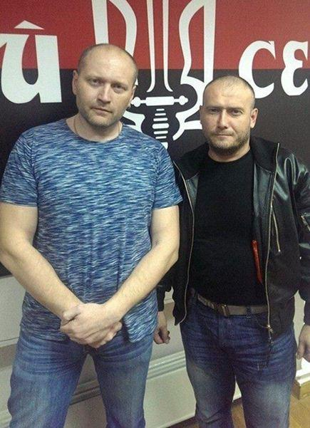
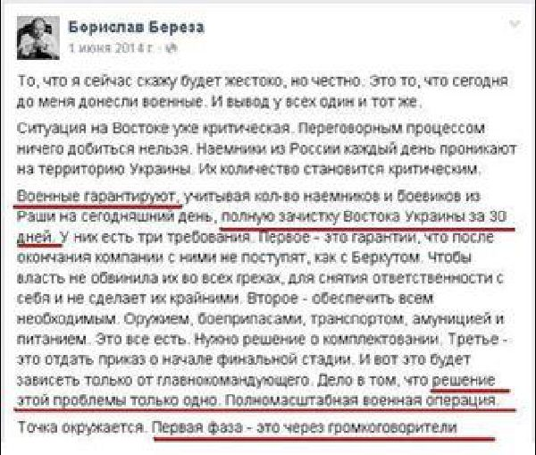
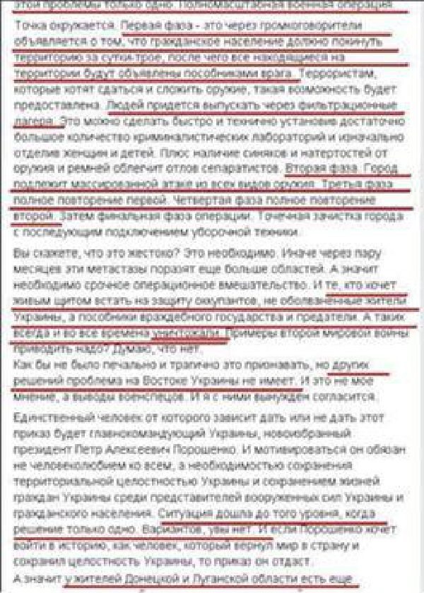
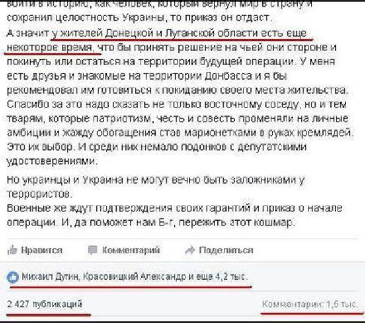

Les quelques reportages rédigés par des journalistes français le présentent comme un garçon à l’allure de rugbyman, un peu rustique, mais très agréable…
Ukrainien, juif et Cohen, Borislav Bereza est né en 1974 à Kiev. En 1991, après la chute de l’Union soviétique, il émigre en Israël, où il vivra jusqu’en 1993.
À son retour en Ukraine, Bereza devient libraire et, parallèlement, animateur de télévision pour la première chaîne nationale ainsi qu'animateur sur Radio Prosto.
De février à décembre 2014, Bereza est porte-parole du parti politique « Secteur Droit » et participe à plusieurs événements de l’Euromaïdan.
Rappelons pour nos lecteurs français que Secteur droit est un parti politique ultranationaliste ukrainien, essentiellement anti-Russe. Fondé initialement comme une confédération paramilitaire regroupant les mouvements d’extrême droite ukrainiens : Tryzub, Assemblée nationale ukrainienne - Autodéfense ukrainienne, Patriotes d'Ukraine et l’Assemblée sociale-nationale, Secteur Droit s’est structuré en parti politique en mars 2014.
C’est durant cette période, en juin 2014, que Borislav Bereza détaille dans un long texte les procédures d’extermination à mettre en œuvre contre la population des républiques du Donbass et de Lougansk dont l’extrait ci-après :
« La première phase est de déclarer à travers des haut-parleurs que la population civile doit quitter le territoire dans un délai de un à trois jours, après quoi toutes les personnes, se trouvant sur le territoire, seront annoncées des complices de l'ennemi. Cette possibilité sera aussi donnée aux terroristes, qui veulent se rendre et de déposer des armes.
Il faut passer des gens à travers des camps de filtration. Cela peut être fait rapidement et habilement, en installant un assez grand nombre de laboratoires de criminologie et, tout d'abord, en séparant des femmes et des enfants. En plus, la présence d'ecchymoses et d’écorchures dus des armes et des ceintures facilitera la capture des séparatistes. La deuxième phase : la ville doit faire l'objet d'une attaque massive de toutes sortes d'armes. La troisième phase est la pleine répétition de la première. La quatrième phase est la pleine répétition de la deuxième.
Ensuite, la phase finale de l'opération : un ratissage ponctuel avec la mise consécutive des opérations de nettoyage. Vous dites que c'est cruel ? Cela est nécessaire. Sinon, après quelques mois, ces métastases affectent encore plus de régions. Et cela signifie qu’il y a un besoin d'une intervention chirurgicale urgente. Et ceux qui veulent être un bouclier humain pour défendre des occupants, ne sont pas des citoyens ukrainiens endoctrinés, mais des complices de l’État hostile et des traîtres.
Et telles personnes sont toujours et en tout temps à liquider. Faut-il donner un exemple de la Seconde Guerre mondiale ? Je pense que non. »
Borislav écrit en outre que des militaires auraient garanti « un nettoyage complet de l’est de l’Ukraine en 30 jours ».



Et de conclure par la phase finale de l’opération : « La purge impeccable de la ville devra être suivie d’un balayage de rue. »
Borislav Bereza est-il le seul à penser ainsi ? Nous avons toutes les raisons d’en douter en constatant le partage sur les réseaux sociaux par 2 427 personnes et les « j’aime » par plus de 4 200 personnes.
À l'automne 2014 Bereza participe à l'élection parlementaire ukrainienne comme candidat « indépendant » et gagne la 213e circonscription électorale à Kiev. Après les élections, il annonce, en tant que député du peuple de l'Ukraine, la création d'un groupe parlementaire intitulé « Ukrop ».
Qui pourrait croire que le député Borislav Bereza, bien que s’étant présenté comme indépendant, a depuis son accession à l’assemblée du Peuple ukrainien changé sa position sur la population du Donbass ?
Qui, à part Tom Burridge de la BBC News, peut décrire l’Ukrop comme un parti de centre-gauche ? Ce parti qui prétend lui-même chercher une adhésion populaire basée sur le patriotisme ukrainien et la social-démocratie, le social-nationalisme… Le social-nationalisme, il fallait oser… mais pas un média euroatlantiste n’oserait faire un lien avec le national-socialisme… Puisque l’on vous dit qu’ils sont de gauche…
Partager cette page